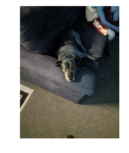

PIL vs OpenCV
As I’m standing on the precipice of doing a bunch of image processing/classification, it occurs to me that I don’t know a whole lot about the available tools and packages for working with images. The following is a look at the two more-popular libraries.
PIL and cv2 both support general image processing, such as:
- Conversion between image types
- Image transformation
- Image filtering
PIL (Pillow)
The Python Image Library
- Easy to use
- Lightweight
Use when you want to cut and resize images, or do simple manipulation.
Installing
Although you import the library as PIL, you have to install it using
pip install Pillow
Use
from PIL import Image
im = Image.open('images/daisy.jpg')
im
Documentation
cv2 (Open CV)
Used for Computer Vision, hence is a much more robust package.
- Loaded with algorithms well-suited for data science and vision-based robotics.
Although, it bears a warning that the library, annoyingly, defaults to reading/writing everything as BGR, instead of the intuitive RGB, because “reasons.” Here’s an excellent post trying to explain why.
Installing
Not to be outdone, getting ahold of cv2 is even more cryptic than PIL.
pip install opencv-python
Use
Whereas PIL reads an image to an Image, cv2 cuts right to the chase and stores it as a np.array
import cv2
im = cv2.imread('images/daisy.jpg')
im.shape(533, 400, 3)
Requiring us to lean on matplotlib to inspect the image
%pylab inline
plt.imshow(im)
plt.axis('off');Populating the interactive namespace from numpy and matplotlib

Documentation
Benchmarking
This kaggle post illustrates that OpenCV blows Pillow out of the water when performing multiple, repeated transformations over multiple files.